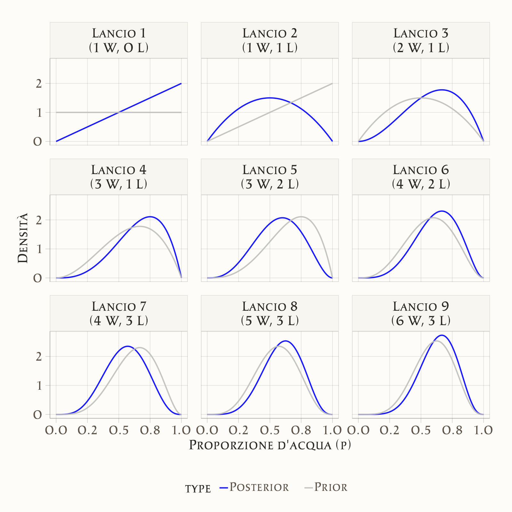

3 La quantificazione dell’incertezza
“The central problem of statistics is how to make decisions under uncertainty.”
— Leonard J. Savage, The Foundations of Statistics
Introduzione
Nel capitolo precedente abbiamo visto che l’incertezza è una componente inevitabile della ricerca psicologica. Abbiamo distinto diversi tipi di incertezza e abbiamo mostrato come l’approccio bayesiano offra un linguaggio per rappresentarla in modo esplicito.
In questo capitolo iniziamo a costruire gli strumenti tecnici di base del pensiero bayesiano. L’obiettivo non è ancora quello di entrare nei dettagli matematici, ma di sviluppare un’intuizione solida su alcuni concetti chiave:
- Credenze iniziali (priori): come rappresentare ciò che sappiamo o supponiamo prima di raccogliere i dati.
- Dati (likelihood): come descrivere formalmente l’informazione che proviene dall’osservazione empirica.
- Credenze aggiornate (posteriori): come combinare priori e dati per ottenere una descrizione più informata dell’incertezza.
L’idea centrale è che il metodo bayesiano funziona come un processo di aggiornamento coerente delle credenze: partiamo da ciò che sappiamo, osserviamo i dati, e arriviamo a conclusioni più raffinate.
Panoramica del capitolo
- Come quantificare e rappresentare matematicamente l’incertezza attraverso le distribuzioni di densità.
- Il processo di integrazione delle nuove evidenze con le conoscenze preesistenti.
- Come i parametri sconosciuti determinano i dati osservati attraverso processi probabilistici.
3.1 L’incertezza come distribuzione di probabilità
Finora abbiamo parlato di incertezza in modo concettuale. Ora facciamo un passo in più: impariamo a rappresentarla formalmente.L’idea di base è che l’incertezza non si descrive con un singolo valore, ma con una gamma di valori possibili, a ciascuno dei quali attribuiamo un grado di plausibilità. Questo insieme di valori e plausibilità è ciò che chiamiamo distribuzione di probabilità.
3.1.1 Un esempio intuitivo
Supponiamo di stimare il livello medio di ansia negli studenti prima di un esame.
- Non sappiamo con certezza quale sia: potrebbe essere 2.8, oppure 3.1, o forse 3.5 su una scala da 1 a 5.
- Alcuni valori ci sembrano più plausibili di altri. Per esempio, 3.0 è più verosimile di 1.0 o di 5.0.
- Possiamo quindi rappresentare la nostra incertezza con una curva che assegna più “peso” ai valori plausibili e meno a quelli estremi.
3.1.2 Perché usare distribuzioni?
Usare distribuzioni di probabilità per rappresentare l’incertezza ha due vantaggi fondamentali:
- Trasparenza: invece di fingere di conoscere un valore preciso, dichiariamo chiaramente quanto siamo incerti.
- Flessibilità: possiamo aggiornare la distribuzione quando raccogliamo nuovi dati, vedendo come la nostra rappresentazione dell’incertezza cambia.
3.1.3 Collegamento con la psicologia
Questa idea non vale solo per punteggi medi, ma per qualsiasi parametro di interesse psicologico:
- la forza di un effetto terapeutico,
- la relazione tra ansia e rendimento,
- la probabilità che un soggetto scelga una certa opzione in un compito cognitivo.
In tutti questi casi, non possiamo mai dire “il valore vero è X”: possiamo solo attribuire una distribuzione di probabilità ai possibili valori.
3.1.4 La natura dinamica dell’incertezza bayesiana
Un aspetto fondamentale dell’approccio bayesiano è che l’incertezza non è statica. Non rimaniamo bloccati nella distribuzione iniziale che assegniamo ai valori possibili: ogni volta che osserviamo nuovi dati, aggiorniamo la distribuzione.
In questo modo, la rappresentazione dell’incertezza è dinamica: evolve con l’accumularsi delle informazioni.
Esempio psicologico:
- Prima di raccogliere i dati, possiamo pensare che la media dell’ansia degli studenti prima di un esame sia plausibilmente intorno a 3.
- Dopo aver osservato le prime risposte, la distribuzione si sposta: se molti studenti riportano valori alti, la parte destra della curva diventa più plausibile.
- Se in seguito raccogliamo ancora più dati, la curva si restringe, riflettendo una maggiore precisione nelle nostre stime.
3.2 Le fondamenta concettuali dell’inferenza bayesiana
L’approccio bayesiano si fonda su un’idea semplice: ogni volta che raccogliamo dati, possiamo aggiornare in modo coerente le nostre credenze. Questa idea è riassunta in una formula molto celebre: il teorema di Bayes.
\[ P(\text{Ipotesi} \mid \text{Dati}) \;=\; \frac{P(\text{Dati} \mid \text{Ipotesi}) \; \times \; P(\text{Ipotesi})}{P(\text{Dati})} \]
3.2.1 Intuizione della formula
- \(P(\text{Ipotesi})\) → la nostra convinzione iniziale, detta prior (“quanto credevo plausibile questa ipotesi prima di raccogliere i dati”).
- \(P(\text{Dati} \mid \text{Ipotesi})\) → la compatibilità tra l’ipotesi e ciò che osserviamo, detta verosimiglianza o likelihood.
- \(P(\text{Ipotesi} \mid \text{Dati})\) → la convinzione aggiornata, detta posterior (“quanto credo plausibile questa ipotesi dopo aver visto i dati”).
- \(P(\text{Dati})\) → un fattore di normalizzazione: garantisce che tutte le ipotesi considerate abbiano probabilità che sommano a 1.
In sintesi:
\[ \text{Posterior} \;\propto\; \text{Likelihood} \times \text{Prior} \]
3.2.2 Un esempio psicologico
Immaginiamo di voler valutare se un nuovo training cognitivo riduce l’ansia negli studenti.
- Prima di raccogliere i dati, abbiamo una convinzione iniziale: pensiamo che l’effetto sia possibile, ma non ne siamo sicuri (prior).
- Dopo aver somministrato il training a un piccolo gruppo, osserviamo una riduzione dell’ansia (dati). Questi dati sono più compatibili con l’ipotesi “il training funziona” che con “il training non funziona” (likelihood).
- Combinando le due cose otteniamo una nuova convinzione più informata (posterior): l’ipotesi che il training riduca l’ansia diventa più plausibile, ma con un margine di incertezza che continueremo a considerare.
3.2.3 Perché è importante?
l teorema di Bayes non è solo una formula: è un principio di ragionamento. Ci dice come passare in modo sistematico da ciò che sappiamo prima (priori) a ciò che sappiamo dopo aver osservato i dati (posteriori). Questa struttura ci permette di integrare teoria e dati in modo coerente, esplicitare le assunzioni iniziali e rappresentare sempre l’incertezza residua.
3.3 L’aggiornamento bayesiano in azione: l’esempio del globo terrestre
Per capire come funziona concretamente il teorema di Bayes, immaginiamo un esperimento mentale proposto da McElreath nel suo testo Statistical Rethinking (McElreath, 2020). Abbiamo davanti a noi un globo terrestre (una sfera blu e marrone) e ci poniamo una domanda:
“Quale proporzione della superficie terrestre è coperta da acqua?”
Sappiamo che gran parte del pianeta è mare, ma non conosciamo la percentuale precisa. Vogliamo stimarla con un piccolo “esperimento casuale”.
3.3.1 Il setup sperimentale
Chiamiamo \(p\) la vera proporzione di superficie coperta d’acqua. Questo è il nostro parametro di interesse: il numero che vogliamo stimare.
Ogni volta che facciamo girare il globo e puntiamo il dito otteniamo un’osservazione:
- W se tocchiamo acqua,
- L se tocchiamo terra.
Il nostro modello dei dati assume che ogni lancio sia indipendente e che la probabilità di osservare acqua sia proprio \(p\).
All’inizio non sappiamo nulla di preciso: potremmo allora assegnare a \(p\) una distribuzione a priori uniforme, cioè ritenere ogni valore compreso tra 0 e 1 ugualmente plausibile. Questo rappresenta uno stato di “ignoranza informativa”: nessuna preferenza iniziale per alcuni valori rispetto ad altri.
3.3.2 La dinamica dell’apprendimento
Primo lancio → osserviamo “W” (acqua). Ora valori molto bassi di \(p\) diventano poco plausibili (se \(p\) fosse vicino a 0, sarebbe stato molto improbabile ottenere acqua al primo colpo). La distribuzione a posteriori si sposta, assegnando più probabilità a valori alti di \(p\).
Secondo lancio → otteniamo “L” (terra). Questo dato porta nella direzione opposta: valori molto alti di \(p\) diventano meno plausibili. La distribuzione a posteriori si “riequilibra”, privilegiando valori intermedi.
Con ogni nuova osservazione, il quadro cambia: nessun dato singolo è definitivo, ma ciascuno contribuisce a modificare il profilo della nostra incertezza.
3.3.3 L’accumulo progressivo dell’evidenza
Immaginiamo di osservare la sequenza: W, L, W, W, L, W, L, W, W.
- Dopo ogni lancio, la distribuzione si aggiorna.
- Ogni posterior diventa automaticamente il prior per il passo successivo.
- In questo modo, l’apprendimento è cumulativo: non scartiamo mai le informazioni già raccolte, ma le integriamo con le nuove.
Questa è l’essenza dell’approccio bayesiano: una catena continua di aggiornamento delle credenze.
3.3.4 L’evoluzione dell’incertezza
Un punto cruciale è che non si aggiorna solo la stima più plausibile di \(p\), ma anche la larghezza della distribuzione:
- con pochi dati, la distribuzione è ampia → riflette grande incertezza;
- con più osservazioni, la distribuzione diventa più stretta → la nostra conoscenza si affina;
- la velocità e la forma del restringimento dipendono dai dati: sequenze molto coerenti riducono l’incertezza rapidamente, sequenze più variabili la riducono gradualmente.

3.3.5 Come leggere il grafico
In ogni pannello, la linea grigia mostra il prior (prima dell’osservazione), e la linea blu il posterior (dopo l’osservazione). Si vede chiaramente come, passo dopo passo, la curva blu si restringa e si concentri intorno ai valori più compatibili con i dati. Ogni distribuzione aggiornata diventa la nuova base di partenza per il passo successivo.
Questo esempio mostra in modo concreto che l’inferenza bayesiana non cerca “una stima definitiva”, ma costruisce un processo dinamico di apprendimento, in cui l’incertezza si riduce e si adatta man mano che i dati accumulano evidenza.
3.4 Implicazioni per la ricerca psicologica
L’esempio del globo terrestre è un gioco semplice, ma ci insegna alcune lezioni fondamentali che valgono pienamente per la psicologia.
Le nostre convinzioni cambiano con i dati La ricerca psicologica non si limita a raccogliere informazioni: è un processo di apprendimento. Ogni studio modifica il nostro quadro di riferimento, integrando la nuova evidenza con ciò che già sapevamo.
L’incertezza non scompare, si aggiorna Dopo pochi dati l’incertezza è ampia; con più osservazioni si restringe, ma non arriva mai a zero. In psicologia, dove i fenomeni sono complessi e variabili, è essenziale rappresentare non solo quanto un effetto è plausibile, ma anche quanto siamo incerti su di esso.
L’informazione è cumulativa Proprio come ogni posterior diventa il nuovo prior, la scienza psicologica avanza grazie all’accumulo coerente di conoscenze. Ogni studio dovrebbe essere visto come un passo in una catena di aggiornamenti, non come un verdetto finale.
3.4.1 Un esempio psicologico
Immaginiamo di valutare l’efficacia di una nuova terapia per l’ansia. Prima dei dati, abbiamo solo intuizioni e risultati preliminari, che costituiscono un prior molto incerto. Dopo il primo studio, otteniamo indicazioni che la terapia potrebbe essere utile, ma con un ampio margine di dubbio, risultando in un posterior ancora largo. Con più studi, le distribuzioni si concentrano progressivamente. Se l’effetto è reale, la curva si restringe intorno a un valore positivo; se l’effetto è debole o assente, la distribuzione si sposterà di conseguenza.
Questo approccio rende più chiaro perché una singola ricerca non basta a stabilire verità definitive, e perché è cruciale replicare e accumulare evidenza.
3.5 Considerazioni pratiche e limitazioni
L’approccio bayesiano offre una cornice concettuale elegante e intuitiva per rappresentare l’incertezza e aggiornare le nostre credenze. Tuttavia, quando passiamo dalla teoria alla pratica della ricerca psicologica, emergono alcune considerazioni importanti.
3.5.1 Scelta delle credenze iniziali (priori)
Un aspetto caratteristico dell’approccio bayesiano è che richiede di specificare sempre una distribuzione a priori. Questo è un vantaggio perché ci costringe a esplicitare le nostre assunzioni e ad ancorarle a conoscenze precedenti, ma è anche una responsabilità, poiché prior troppo forti o poco giustificate possono influenzare eccessivamente i risultati. In pratica, gli psicologi devono imparare a distinguere tra prior debolmente informativi, che lasciano spazio ai dati, e prior informativi, che incorporano evidenza accumulata o teoria.
3.5.2 Complessità computazionale
Molti modelli psicologici sono complessi, con più parametri, strutture gerarchiche e dinamiche temporali. Le formule di Bayes, in questi casi, non si possono risolvere a mano. Si usano invece metodi numerici come le simulazioni Monte Carlo (MCMC), che richiedono tempo di calcolo e competenze specifiche. Oggi strumenti come Stan o brms rendono queste tecniche accessibili, ma serve comunque una formazione adeguata.
3.5.3 Interpretazione dei risultati
I risultati bayesiani sono concettualmente più trasparenti, poiché parlano di plausibilità di valori invece di fornire un verdetto sì/no basato sulla “significatività”. Tuttavia, richiedono un cambio di mentalità. Per chi è abituato a pensare in termini di p-value, questo può sembrare inizialmente meno rassicurante, ma in realtà è più realistico, in quanto fornisce una distribuzione di possibilità.
3.5.4 Limitazioni intrinseche
Infine, va ricordato che anche l’approccio bayesiano ha limiti. Non elimina l’incertezza, ma la descrive soltanto meglio; dipende comunque dalla qualità dei dati, per cui dati rumorosi o campioni non rappresentativi rimangono problematici; e riflette sempre la struttura del modello scelto, per cui se il modello è inadeguato, anche la migliore inferenza bayesiana porterà a conclusioni distorte.
Riflessioni conclusive
In questo capitolo abbiamo fatto il nostro primo vero passo dentro il pensiero bayesiano. Abbiamo visto che l’incertezza può essere rappresentata come una distribuzione di probabilità e abbiamo introdotto il teorema di Bayes, la regola che collega credenze iniziali, dati osservati e credenze aggiornate. Attraverso l’esempio del globo terrestre, abbiamo compreso come l’aggiornamento bayesiano funzioni in pratica: ogni nuova osservazione restringe o sposta la distribuzione delle nostre convinzioni, riducendo progressivamente l’incertezza.
Abbiamo discusso le implicazioni per la ricerca psicologica, riconoscendo che i dati non danno risposte definitive, ma guidano un processo di apprendimento cumulativo. Infine, abbiamo esaminato le considerazioni pratiche e le limitazioni dell’approccio, dalla scelta dei priori alla complessità computazionale, dall’interpretazione dei risultati alla dipendenza dalla qualità dei modelli.
Questa panoramica ci ha permesso di sviluppare un’intuizione solida: il bayesianesimo non elimina l’incertezza, ma ci fornisce un metodo coerente e trasparente per trattarla. Nei prossimi capitoli tradurremo queste idee in strumenti concreti, imparando a costruire e interpretare modelli bayesiani applicati alla ricerca psicologica.
Un equivoco comune è pensare che l’approccio bayesiano fornisca “più certezze” rispetto a quello frequentista. In realtà, accade il contrario: i risultati bayesiani mettono in evidenza l’incertezza, anziché nasconderla dietro a un singolo numero o a un verdetto dicotomico. Questo può inizialmente sembrare meno rassicurante, soprattutto per chi è abituato a ragionare in termini di p-value e soglie di significatività. Tuttavia, proprio questa trasparenza costituisce la forza dell’approccio bayesiano: ci permette di comunicare in modo più onesto quali valori dei parametri sono plausibili e quanto spazio rimane per il dubbio. Adottare il pensiero bayesiano significa quindi cambiare prospettiva: non cercare una “certezza definitiva”, ma abituarsi a ragionare in termini di gradi di plausibilità e di apprendimento continuo dai dati.